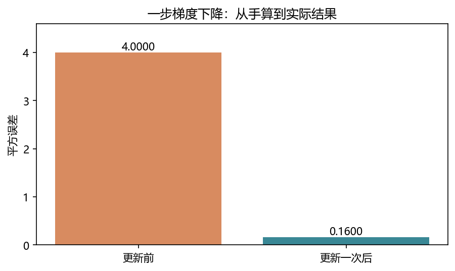
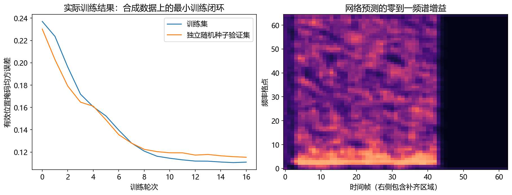

看图理解 · 跟着推演 · 对照真实结果
第12课 · 神经网络到底怎样学会一个参数
先建立直觉，再逐节讲原理、代码与结果；章节目录可定位学习。从可手算的一个参数出发，实际比较学习率，再连接到音频掩码、张量和训练验证。
从直觉、原理，到代码与结果
本版保留导览小实验，增加教材逐节精讲、代码分段阅读和结果解释。三个项目另有本次真实模型短推理，第 12 课增加实际训练曲线。按右侧小节分次学习即可，不必一次看完。
完整文字、规范公式和注释代码仍在上方“读完整图文”。视频中的历史报告、教学算例与本次实测分别标明，短演示不冒充完整重训或设备验收。
先修：Python循环、数组与STFT；微积分从一个标量例子开始
- 推导并核验一次梯度更新
- 解释学习率过大为什么会越改越错
- 读懂音频网络的形状、有效损失和集合职责
本课覆盖清单与证据范围
- 1. 神经网络先不要想成“大脑”，把它想成可调整的计算器
- 2. 把问题换成音频：每个时频格点应该保留多少
- 3. 先认识形状，再读网络
- 4. 长短不齐的语音，为什么不能随便补零后求平均
- 5. 一次训练和一次验证，到底差在哪里
- 6. 练习、答案与排错
- 7. 到实习面试时，交什么才有说服力
结果从哪里来
- 导览中的小算例实际执行
- 原教材逐节讲解；正文代码/公式/图保留
- 新增真实运行与记录：depth-assets
导览执行NumPy标量梯度实验，深入部分另有本次PyTorch教学网络16轮训练。训练数据是合成谐波，不是真人语音；声码器只测试前向与梯度，不代表自然语音合成效果。
新版视频时间轴已改变，单独记录续播位置；学习计划的完成勾选保持不变。
跟着运行：注释代码、实际输出与结果图
下面代码在生成本站时实际执行。这里只是教学小实验，不是完整模型训练或业务设备测评。
import numpy as np
steps = np.arange(10)
curves = []
for lr in [0.1, 0.3]:
w = 0.5; losses = [] # 同一起点，只改变学习率
for _ in steps:
prediction = w*2.0
losses.append((prediction-3.0)**2)
grad = 2*(prediction-3.0)*2.0 # 链式法则的两项
w -= lr*grad # 沿负梯度方向移动
curves.append(np.array(losses))
# 对数仅用于绘图，训练优化的仍是原平方误差
stable_db = 10*np.log10(curves[0]+1e-12)
large_db = 10*np.log10(curves[1]+1e-12)
print('初始损失:', curves[0][0])
print('一步后lr=0.1:', round(curves[0][1], 4))
print('一步后lr=0.3:', round(curves[1][1], 4))
本次实际输出
初始损失: 4.0 一步后lr=0.1: 0.16 一步后lr=0.3: 7.84

精讲中的代码、运行步骤与大图
代码片段用于逐行理解；真实运行结果仅限明确标注“本次实际”的部分。教材历史图保留原有实验范围。
代码精读 01 · 第1–18行
源码精读 / 教学片段，需配套环境与上下文，不等同于独立脚本。
import torch
w = torch.tensor(0.5, requires_grad=True) # 一个需要学习的标量
x = torch.tensor(2.0)
target = torch.tensor(3.0)
prediction = w * x
loss = (prediction - target).square()
loss.backward() # 自动计算 d(loss)/d(w)
print(loss.item(), w.grad.item()) # 手算预期：4.0，-8.0
with torch.no_grad(): # 更新本身不再建立求导图
w -= 0.1 * w.grad
print(w.item()) # 约 1.3
# 把这次真实计算的更新前后损失保存为图，不弹出窗口。
from pathlib import Path
import matplotlib
matplotlib.use("Agg")
import matplotlib.pyplot as plt代码精读 01 · 第19–28行
源码精读 / 教学片段，需配套环境与上下文，不等同于独立脚本。
plt.rcParams.update({"font.family": "Microsoft YaHei", "axes.unicode_minus": False})
after = (w.detach()*x-target).square().item()
values = [loss.item(), after]
fig, ax = plt.subplots(figsize=(7, 3.8))
bars = ax.bar(["更新前", "更新一次后"], values, color=["#d88b60", "#398795"])
ax.bar_label(bars, labels=[f"{value:.4f}" for value in values])
ax.set(ylabel="平方误差", title="一步梯度下降：从手算到实际结果", ylim=(0, 4.6))
Path("tutorial/figures").mkdir(parents=True, exist_ok=True)
fig.savefig("tutorial/figures/ch12_gradient.png", dpi=150, bbox_inches="tight")
plt.close(fig)结果读图 01 · 1. 神经网络先不要想成“大脑”，把它想
原教材运行记录

原教材已存图 不是本次新测 先确认实验范围 再解释坐标与单位
代码精读 03 · 第1–18行
源码精读 / 教学片段，需配套环境与上下文，不等同于独立脚本。
import torch
from torch import nn
import torch.nn.functional as F
class MaskNet(nn.Module):
def __init__(self):
super().__init__()
self.conv = nn.Conv2d(1, 4, (3, 3), padding=(1, 0))
self.out = nn.Conv2d(4, 1, 1)
def forward(self, x):
x = F.pad(x, (2, 0, 0, 0)) # 时间轴只向过去补两帧
hidden = F.relu(self.conv(x)) # [B,4,F,T]
return torch.sigmoid(self.out(hidden))
model = MaskNet()
features = torch.randn(2, 1, 65, 63)
output = model(features)代码精读 03 · 第19–20行
源码精读 / 教学片段，需配套环境与上下文，不等同于独立脚本。
assert output.shape == (2, 1, 65, 63)
print(output.shape)代码精读 04 · 第1–10行
源码精读 / 教学片段，需配套环境与上下文，不等同于独立脚本。
import torch
pred = torch.full((2, 1, 3, 4), 0.5)
target = torch.zeros_like(pred)
lengths = torch.tensor([3, 1])
time = torch.arange(4)
valid = (time[None, :] < lengths[:, None])[:, None, None, :]
weight = valid.expand_as(target) # [2,1,3,4]，广播到频率轴
loss = ((pred-target).square()*weight).sum() / weight.sum()
print(weight.sum().item(), loss.item()) # 12，0.25结果读图 05 · 5. 一次训练和一次验证，到底差在哪里
原教材运行记录

原教材已存图 不是本次新测 先确认实验范围 再解释坐标与单位
真实训练循环：不是只更新一个标量
源码精读 / 教学片段，需配套环境与上下文，不等同于独立脚本。
model.train()
for features, target, valid in loader:
optimizer.zero_grad(set_to_none=True)
prediction = model(features)
loss = masked_mse(prediction, target, valid)
loss.backward()
torch.nn.utils.clip_grad_norm_(model.parameters(), 5.)
optimizer.step()
# 验证：eval + no_grad，不调用step本次完整训练曲线与预测掩码
本次实际运行

参数量 1441 训练 96 / 验证 24 16轮 / CPU 验证起点 0.2302 验证终点 0.1154
闭卷自测：x=2、目标3、w=0.5，平方损失，学习率1；一步后损失是多少？
梯度−8，新w=8.5，预测17，损失(17−3)²=196。方向正确不能保证任意大步长稳定。
逐字讲稿 · 可定位回看
计算器把输入乘一个可调系数。你希望输入 2 时输出 3，但现在系数只有 0.5。这比把神经网络想成神秘大脑更容易检查。
当前预测是 0.5 乘 2，等于 1；目标是 3，所以差了 −2。用平方误差作为本例损失，得到 4。 这时损失对系数的导数为 −8，意思是在这个位置，小幅增加系数会让损失下降。学习率取 0.1，按梯度下降更新后，系数变成 1.3。
再算一次：预测为 2.6，平方误差为 0.16。它比 4 小，但还没有完全达到目标；学习率过大也可能跨过合适位置。 在一道题上误差下降，不代表对所有录音都有效。数据泄漏、过拟合和评价设置可能造成虚假的好成绩。
不要一开始把神经网络想成神秘的大脑。先只有一个旋钮，参数叫 w，计算器把输入乘这个旋钮。输入二，参数零点五，输出是一；我们希望它输出三，因此当前预测差了二。
目标三是这条训练样本提供的答案，不是网络自动发现的。模型、数据和目标共同决定它会学什么。如果目标与音频没对齐，再强的优化器也可能非常努力地学习错误关系。
今天的最小实验只训练一个标量，不运行完整音频网络。你先亲手理解前向、损失、梯度和更新四步，之后再把一只旋钮扩展成许多参数，复杂网络的基本逻辑仍然相同。
预测一减目标三，误差为负二，平方后损失为四。平方让正负错误都产生非负代价，也让大错误受到更重惩罚。它方便推导，但不是所有音频任务都只能使用这一种损失。
如果参数从零点五增大一点，预测会更靠近三，损失会减少；如果减小，损失反而增加。这个局部变化趋势就是我们希望用梯度描述的东西，不需要靠随机尝试每一个参数值。
注意训练损失与业务指标不一定相同。频谱均方误差下降，不保证每个辅音更清楚；分离损失改善，也不直接给出文字识别率。我们先把优化目标说清，再讨论怎样独立评测。
第一段变化是参数对预测的影响：预测等于参数乘输入，因此参数增加一点，预测增加输入那么多，这里是二。第二段变化是预测对平方损失的影响，等于二乘预测与目标之差。
当前预测一、目标三，第二段是负四。把负四乘第一段的二，得到参数梯度负八。这个负号说明在当前位置稍微增大参数会降低损失，不要把负梯度方向又说成减小参数。
PyTorch 的 backward 按计算图自动完成这种链式求导。它不是偷偷找到正确答案，而是把你写出的计算关系求导。手算这个小例子，是检查自动求导和误差定义有没有理解反的重要方法。
学习率取零点一，更新等于旧参数减去学习率乘梯度。因为梯度负八，所以这里实际增加零点八，新参数为一点三。新预测是二点六，与目标三相差负零点四，平方损失为零点一六。
我们没有一步到最优参数一点五，但已经接近很多。这个例子特意简单，所以改善非常明显；复杂网络多参数、多样本训练时，不能保证每一批更新都让验证分数单调提升。
如果学习率过大，就可能跨过谷底到更远的另一边。负梯度只是局部下降方向，不能推出沿它走任意远都更好。接下来只改变学习率，实际把这件事画出来。
代码分别运行零点一和零点三两个学习率，每次都把参数重置为零点五。若第二次继承第一次的参数，实验就不再是相同起点的公平比较。更新次数也固定为十次。
循环先计算预测，再记录更新前损失，接着按手算公式计算梯度，最后更新参数。横轴为零的点代表还没有更新时的损失，横轴为一才是更新一次后的结果。
最后把平方误差转成十倍对数方便同时展示很大和很小的数值。这只是绘图变换，优化时仍使用原平方损失，不是把目标函数换成了对数损失。小正数避免零值取对数。
两条曲线从相同位置出发。学习率零点一的损失持续下降，一步以后原损失为零点一六；零点三那条一步以后为七点八四，比初始四还大，随后继续增大。
纵轴是损失的对数表达，不是识别准确率，也不是语音信噪比。曲线在零以下意味着原损失小于一，不意味着出现负的平方误差。读图前先确认坐标轴定义。
这是真实执行这段标量代码得到的结果，证明步长会影响优化稳定性。它不能证明真实音频模型也应该使用零点一；网络、优化器和损失尺度变了，合适学习率也会变。
音频增强中，可以让网络为每个时间帧、每个频率位置预测一个增益掩码。输入复数频谱叫 Y，掩码叫 M，相乘得到估计频谱。它不是把整段录音统一开关，而是很多格点分别调节。
如果带噪幅度八、目标幅度二，幅度比是零点二五。预测零点五时，掩码误差平方为零点零六二五，而重建幅度误差平方为四。两个损失数值不同，因为对格点的权重含义不同。
把掩码限制在零到一很方便，但不能放大。真实混合可能相位抵消，使干净幅度大于带噪幅度，因此理想幅度比不一定小于一。只改幅度保留带噪相位，也有表达能力限制。
假设四千零九十六点波形，FFT 一百二十八点，帧移六十四，而且不做居中填充。单边频率格点是六十五，时间帧数是一加四千零九十六减一百二十八再除六十四，等于六十三。
一个批次可以写成 B、一个特征通道、六十五频点、六十三帧。B 是几条样本，不是麦克风声道。中间卷积变成四个特征通道，也不是突然分离出四个人在说话。
时间卷积只在左边补历史，能够避免读取未来帧；频率上下填充不是未来音频。但当前分析窗仍要收齐采样，所以网络帧级因果不等于整套系统零延迟。
两条录音有效长度三帧和一帧，每帧三个频率点，补齐到四帧后，共有二十四个存储位置，但只有十二个有效元素。损失分母应按有效元素计数，不要把补零当成真实标签。
通常每批先清梯度，再前向、求损失、反向、更新。梯度默认累加，只有明确设计梯度累积时才保留。训练模式与评估模式控制某些层行为，关闭求导则控制是否记录计算图，两者不互相替代。
训练集负责学习，验证集负责选超参数和检查点，测试集留作最终评估。先按说话人或会话划分再切片，避免同一录音相邻片段跨集合。曲线好得异常时，先查泄漏，不急着写简历。
暂停计算：初始仍是零点五，输入二、目标三，但学习率换成一。新参数为八点五，预测十七，损失一百九十六。你应该能够不用代码得出结果，再用代码核对。
真正搭音频训练时，先拿十条固定样本检查能否把训练误差降得很低。这不是最终能力证明，只是验证标签、损失和更新链路接通。连这一步都失败，就先排错，不必立刻下载更多数据。
今天留下梯度手算、两种学习率的运行图和完整shape表。下一步按原课读 PyTorch 模型与训练脚本，再解释有效掩码和因果测试。能闭卷说明一个批次怎样变成参数更新，才算跨过这一课的核心门槛。
本课完整训练输入是带噪频谱的对数幅度，目标是干净幅度与带噪幅度之比，并截到零到一。不要误把干净目标送进网络输入，否则训练曲线会很好看，却不是可部署的降噪任务。
一批输入形状为批次、一个通道、六十五个频点、六十三帧。两层卷积学习局部时频规律，最后输出同样时频尺寸的增益。频率上下文和未来时间上下文要区分。
长短不齐的样本带有有效帧标记。分子只累加有效位置误差，分母也只统计这些位置，否则补零越多，损失可能越被稀释。全空样本要拒绝或显式跳过。
训练过程包括清梯度、前向、算损失、反向、裁剪和更新。验证不更新权重，使用独立数据与固定规则。模型eval模式和关闭梯度记录是两件不同的事。
不要只看loss下降，检查选中的参数确实发生变化、冻结参数保持不变、梯度有限。先固定一个小批次做过拟合测试，再用独立验证集研究泛化，能更快发现标签和更新链路错误。
若要精确恢复，还要保存优化器、调度器、随机状态和数据进度。只保存state_dict可以恢复推理，但不自动保证训练从同一步继续。测试集不能参与选择最佳轮次。
假设你有一个可调旋钮 w，计算器收到数字 x，输出 估计y=wx（代码里的 prediction）。现在输入 x=2，希望输出 y=3（代码里的 target），但旋钮设成 w=0.5，所以只输出 1。
我们用损失 mathcalL=(估计y-y)的幂2 表示错得多严重。本次损失是 (1-3)的幂2=4。平方的作用是让正负错误都产生非负代价，而且大错误受到更重惩罚；它不是所有音频任务的唯一正确选择。
下一步不是随机乱拧旋钮，而是问：w 稍微增大，损失会怎样变化？这个局部变化率叫梯度。链式法则把两段变化相乘：
梯度为负，说明在当前位置稍微增大 w 会降低损失；“负梯度方向”则是梯度取反后的方向，这两个说法不要混淆。取学习率 eta=0.1（代码里的 lr），更新规则为：
这里的“下坡”类比只描述局部方向。学习率太大可能越过谷底；多个参数的复杂损失面也不保证每一步都让验证成绩变好。
下面代码从课程根目录 audio-course-zh 运行，会把实际计算出的损失画到 tutorial/figures/ch12_gradient.png。绘图需要 Matplotlib；中文标签使用本机微软雅黑，其他系统可换成已安装的中文字体。
图中的两根柱子就是代码里的 loss 与 after，不是示意成绩。这个只有一个参数的例子能核对更新方向，不代表完整降噪网络每次更新都如此大幅改善。
requires_grad=True 是要求记录参数如何影响损失；backward() 按计算图应用链式法则，不是自动寻找“正确答案”。
.grad 保存梯度，.item() 把单个张量数值取出来供打印。真实网络有很多旋钮，但原理仍是前向计算、衡量错误、反向求导、更新参数。
先看中文注释：一个需要学习的标量。这几行仍属于1. 神经网络先不要想成“大脑”，把它想成可调整的计算器的同一处理链，输入变量沿用前一段，不是一个独立程序。
先看中文注释：自动计算 d(loss)/d(w)；手算预期：4.0，-8.0；更新本身不再建立求导图。backward沿计算图求梯度。它本身不更新权重；还要检查梯度有限并调用优化器更新。 打印是观测点。把这里的真实值与理论预期比较，若不一致应保留输出排错，而不是手工改成期望数字。
先看中文注释：把这次真实计算的更新前后损失保存为图，不弹出窗口。。绘图展示的是传入数组。核对横轴单位、图例与统一尺度后，才可以比较不同处理的变化。
先看中文注释：d88b60", "#398795"])。绘图展示的是传入数组。核对横轴单位、图例与统一尺度后，才可以比较不同处理的变化。
绘图展示的是传入数组。核对横轴单位、图例与统一尺度后，才可以比较不同处理的变化。
先看中文注释：d88b60", "#398795"])。绘图展示的是传入数组。核对横轴单位、图例与统一尺度后，才可以比较不同处理的变化。
先看这张随教材保存的图。上方完整代码实际运行结果：梯度更新一次后损失从 4 降到约 0.16。本次视频引用既有结果，不把它称为新运行。
横轴、纵轴、图例和单位决定图在回答什么问题。若曲线重合，先问它验证的是数值等价、形状还是算法质量。图像相似不自动证明真实业务效果相同。
把图中观察与本节假设联系起来，再回到前面的代码确认数组来源。合成信号实验、历史报告和真实模型输出属于不同证据范围，不能混成同一个成绩。
带噪复数频谱记为 Y，干净频谱记为 S。我们训练网络预测与频谱对应的增益掩码 M，逐个时频点相乘，得到估计：
其中 f 是频率格点索引，t 是时间帧索引。这是逐元素乘法，不是矩阵乘法。掩码方法不是决定整段录音开或关，而是为不同时间、不同频率分别调音量。
假设某个格点 lvert Yrvert=8、lvert Srvert=2，理想幅度比是 （2）除以（8）=0.25。网络若预测 0.5，就会保留过多能量。若用掩码均方误差，这一格的损失是 (0.5-0.25)的幂2=0.0625；若比较重建幅度，则是 (0.5乘8-2)的幂2=4。
两种损失的权重与含义不同，数值不能直接横向比较。
本课把目标幅度比截到 [0,1]，并用 sigmoid 把输出限制在这个区间。好处是简单；限制是不能放大。
真实混合存在相位抵消，干净幅度可能大于带噪幅度，所以“理想幅度比永远小于 1”是错的。只改幅度还保留了带噪相位，也会限制效果。
完整实验使用 4096 点波形、128 点 FFT、64 点帧移，而且不在波形两端做居中填充。频率格点数为 （128）除以（2）+1=65；时间帧数为 1+（4096-128）除以（64）=63。
变量：原始波形。单个样本形状：[4096]。一个批次的形状：[B,4096]。每个轴代表什么：样点。
变量：复数频谱。单个样本形状：[65,63]。一个批次的形状：[B,65,63]。每个轴代表什么：频率、时间。
变量：网络特征。单个样本形状：[1,65,63]。一个批次的形状：[B,1,65,63]。每个轴代表什么：通道、频率、时间。
变量：目标掩码。单个样本形状：[1,65,63]。一个批次的形状：[B,1,65,63]。每个轴代表什么：每格一个增益。
变量：有效标记。单个样本形状：[1,1,63]。一个批次的形状：[B,1,1,63]。每个轴代表什么：哪些时间帧是真数据。
B 是同时处理几条样本，不是声道数。这里网络输入的“1 个通道”是特征通道；不要和双麦克风的两个物理录音通道混淆。log1p(abs(Y)) 压缩幅度范围，让特别响的格点不至于在数值上压倒其他格点；它不是把波形直接取对数。
Conv2d 用一组共享的小权重看相邻时频格点。1→4 表示从一种输入特征学习四种中间特征，不是把一条语音变成四条语音。ReLU 把负值截为零，加入非线性；最后的 1×1 卷积混合这四种特征，再变回每格一个增益。
F.pad 参数从最后一维开始，故 (2,0,0,0) 是时间左侧补 2、右侧补 0。它让当前结果不读取未来时间帧。频率上下补齐不等于读取未来。即便网络是帧级因果，采集当前分析窗仍需时间，所以因果不等于零延迟。
这一小段承接“3. 先认识形状，再读网络”的前后文。注意画面中的循环范围、索引和返回位置：循环内执行每一步，循环外只做汇总。完整可运行入口仍以配套教材为准。
先看中文注释：时间轴只向过去补两帧。这几行仍属于3. 先认识形状，再读网络的同一处理链，输入变量沿用前一段，不是一个独立程序。
先看中文注释：[B,4,F,T]。这几行仍属于3. 先认识形状，再读网络的同一处理链，输入变量沿用前一段，不是一个独立程序。
断言把预期写成可失败的检查。通过只说明这一条件成立，不自动代表声音质量或全部场景合格。 打印是观测点。把这里的真实值与理论预期比较，若不一致应保留输出排错，而不是手工改成期望数字。
断言把预期写成可失败的检查。通过只说明这一条件成立，不自动代表声音质量或全部场景合格。 打印是观测点。把这里的真实值与理论预期比较，若不一致应保留输出排错，而不是手工改成期望数字。
断言把预期写成可失败的检查。通过只说明这一条件成立，不自动代表声音质量或全部场景合格。 打印是观测点。把这里的真实值与理论预期比较，若不一致应保留输出排错，而不是手工改成期望数字。
两条语音有效长度分别为 3 帧和 1 帧，每帧 3 个频率格点。为组成批次，都补到 4 帧。实际有效元素有 (3+1)乘3=12 个，不是 2乘4乘3=24 个。
若每个有效位置误差平方都是 0.25，正确平均是 （12乘0.25）除以（12）=0.25。如果分母错误地使用全部补齐位置，结果可能被稀释；如果连填充区也参与求误差，模型又会被迫学习“空白标签”。
expand_as 表达“所有频点共用这一帧的有效性”，不是创建新标签。这个例子也提醒你：张量形状能对上，不代表统计口径一定正确。示例确保至少有一帧有效数据；真实管线如果出现全空样本或整个批次都无效，应先记录并拒绝或跳过该批次，不能让分母为零后继续训练。
arange按固定步长生成索引。若随后除以采样率，才把采样点编号换成秒。 零数组用于初始化缓冲或状态。流式处理时只在会话开始清零，不应在每个新音频块到来时重置历史。
先看中文注释：[2,1,3,4]，广播到频率轴；12，0.25。sum沿指定维度累加。它不是平均值，样本数或维度改变时量级也可能改变。 这里调整张量形状或增加长度为一的维度。样本值未因此获得新信息，要分清批次、通道和时间。
先看中文注释：[2,1,3,4]，广播到频率轴；12，0.25。arange按固定步长生成索引。若随后除以采样率，才把采样点编号换成秒。 sum沿指定维度累加。它不是平均值，样本数或维度改变时量级也可能改变。
读 完整训练脚本 时，按这个顺序追踪 train_epoch：清梯度→取特征与标签→预测掩码→计算有效位置损失→反向传播→裁剪异常梯度→优化器更新。梯度默认会累加，所以通常每批都要清零；只有主动设计梯度累积时才保留。
model.train() 与 model.eval() 控制 Dropout、BatchNorm 等层的行为；no_grad() 控制是否记录求导图，两者不是替代关系。验证阶段既应选择评估行为，也不应更新参数。训练集负责学，验证集负责选方案，测试集用于最后一次公正验收。
优化器也不用一开始就背很多名字。普通梯度下降按当前梯度更新；动量方法积累过去的更新方向，减少某些来回摇摆；Adam 还追踪梯度及其平方的滑动统计，给不同参数形成不同的有效步长。它们都不能替你检查错误标签、未来信息泄漏和无效损失。学习率调度是在训练过程中改变步长，不是每次 loss 上升就手工乱改。
还有一个特别实用的检查：先拿十条固定样本反复训练，看能否把训练误差降得很低。这不是最终目标，而是证明模型、标签和更新链路基本接通的“小样本过拟合测试”。通过后再换独立验证集研究泛化；如果连十条都学不会，先排代码问题。
固定这十条时要同时固定随机增广，否则每次生成不同噪声，实际任务一直在变化，就不再是同一个检查。
真实语音不能只把同一段录音随机切片后分给训练与测试。相邻切片可能共享说话人、房间、设备甚至重叠样点，成绩会过于乐观。应先根据目标决定按说话人、会话、设备或日期分组，再切片。归一化统计量也只能从允许的训练数据计算。
这张图由已经执行的 neural_lab.py 生成，不是上面缩小版网络短代码的直接绘图。左图来自 96 条训练样本、24 条验证样本、16 轮训练的合成实验。
训练与验证损失下降说明它学会了该合成分布中的规律。右图显示增益，不是干净语音频谱；越暗表示越强衰减。图上的补齐部分不参与训练损失。
这里没有真人语音，因此不能把曲线写成“真实通话降噪提升”。查看 运行记录 可以确认参数量、损失、版本与验证边界。原实验还改动未来帧，检查过去输出不变，这是很值得迁移到真实流式项目的单元测试。
先看这张随教材保存的图。实际训练曲线及预测掩码。本次视频引用既有结果，不把它称为新运行。
横轴、纵轴、图例和单位决定图在回答什么问题。若曲线重合，先问它验证的是数值等价、形状还是算法质量。图像相似不自动证明真实业务效果相同。
把图中观察与本节假设联系起来，再回到前面的代码确认数组来源。合成信号实验、历史报告和真实模型输出属于不同证据范围，不能混成同一个成绩。
练习一：把第一节学习率改为 1，更新后损失是多少？答案：w=8.5，预测 17，损失 196，明显发散。负梯度方向正确，不代表任意步长都合适。
练习二：批次有 8 条样本，输入 [8,1,65,63]，中间卷积输出 12 通道，张量是什么形状？答案：保持时频尺寸时是 [8,12,65,63]，不是 [12,8,65,63]。
练习三：训练损失持续下降，验证损失先降后升，应该选择最后一轮吗？答案：不应自动选择最后一轮。按预先约定的验证指标选择检查点，并检查过拟合与数据分布；不要用测试集挑轮次。
症状：loss 是 NaN。先做的检查：输入是否有限、除零、对数下界、学习率。不要急着做什么：直接换更大模型。
症状：loss 完全不变。先做的检查：参数是否交给优化器、是否调用 step、梯度是否为零。不要急着做什么：盲目加训练轮数。
症状：十条数据都拟合不了。先做的检查：标签对齐、形状、损失、参数更新。不要急着做什么：先下载更多数据。
症状：验证异常好。先做的检查：重复录音、同会话切片、测试参与调参。不要急着做什么：直接把数字放简历。
症状：离线好、流式差。先做的检查：
未来上下文、跨块缓存、特征边界。不要急着做什么：只调阈值掩盖问题。
本章的就业产物是一份最小训练报告：画出输入到损失的所有形状；记录数据划分、种子和配置；保留训练/验证曲线；
展示一个失败样例；说明你独立修复过的错误。随后才把合成数据替换为有权使用的真实语音，并增加听感、语音指标和时延评测。
要记住训练四步和集合职责；要能推导一个标量梯度与有效元素平均；要能实现掩码损失、训练循环和因果测试。下一次学习先合上教程，用五分钟讲清楚“一个 batch 如何变成一次参数更新”，讲不清的地方就是优先复习的位置。
完整课程例程这次重新执行了真实PyTorch训练，不是只用NumPy模拟一个旋钮。数据是九十六条训练、二十四条验证的合成谐波加噪，模型一千四百四十一个参数，CPU运行十六轮。
每批清梯度后预测掩码，再按有效帧计算均方误差。backward只计算梯度，optimizer.step才更新参数。裁剪梯度是稳定措施，不是掩盖NaN或错误标签的方法。
验证使用独立随机种子的合成样本，不更新权重。这个实验能证明训练闭环与帧级因果测试运行，但不包含真人语音，不能把结果写成真实通话降噪提升。
左图是本次实际记录的训练与验证损失，右图是网络预测的频谱增益。右边不是干净语音频谱，暗的地方表示预测更强衰减，补齐区域也不能当作有效目标来解释。
验证损失从约0.230降到约0.115，中间并非每轮严格下降。选择检查点应依据预先约定的验证规则，而不是看到最后一轮就默认最好。
另外修改未来帧并比较过去输出，本次最大差为零，验证了这份网络实现的帧级因果性质。前端成帧仍有等待，因此帧级因果不等于系统零延迟。
适用边界与参考正文
导览执行NumPy标量梯度实验，深入部分另有本次PyTorch教学网络16轮训练。训练数据是合成谐波，不是真人语音；声码器只测试前向与梯度，不代表自然语音合成效果。
教学图与实验图由本站整理生成；项目代码、预训练模型和公开数据的来源见配套正文。旁白是本地中文语音合成，不是教师真人录音，也不是 NotebookLM 生成。没有向 Google 上传项目材料。